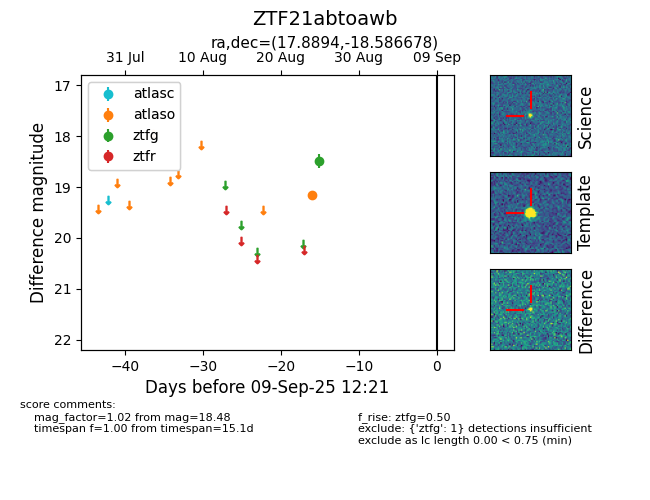

FINK: ZTF21abtoawb
Lasair: ZTF21abtoawb
ALeRCE: ZTF21abtoawb
ZTF21abtoawb (ztf,fink)
equatorial (ra, dec) = (17.8894,-18.58668)
galactic (l, b) = (152.4354,-80.28517)

last atlaso=19.16, ztfg=18.48
1 atlaso, 1 ztfg detections